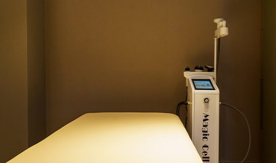
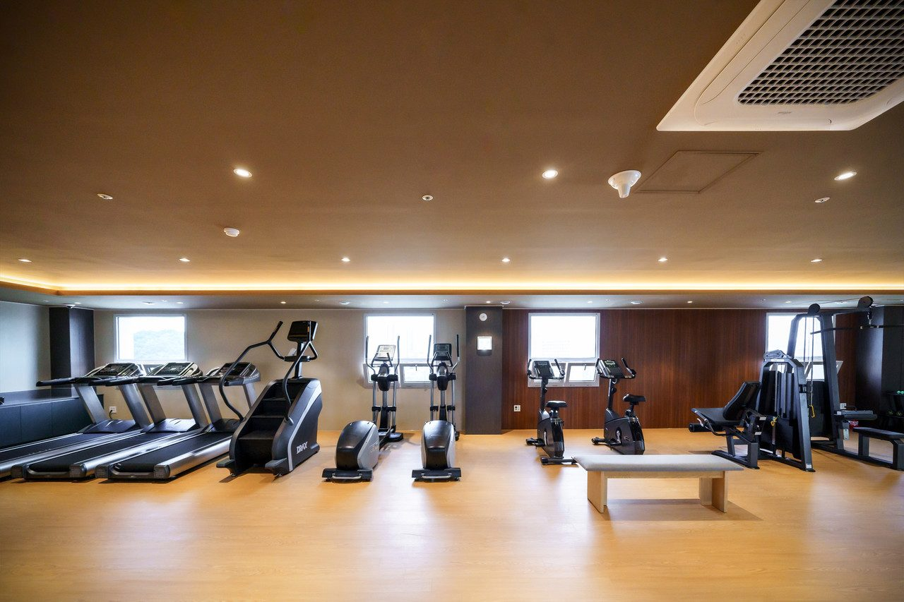
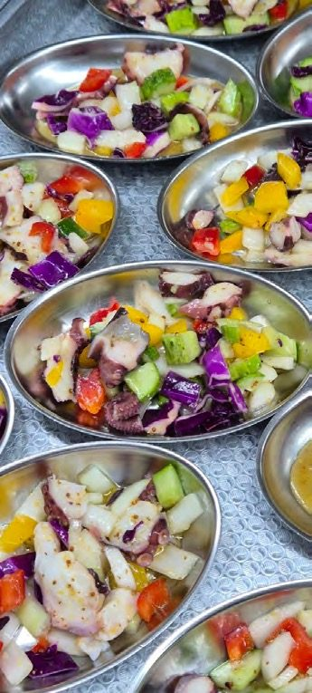
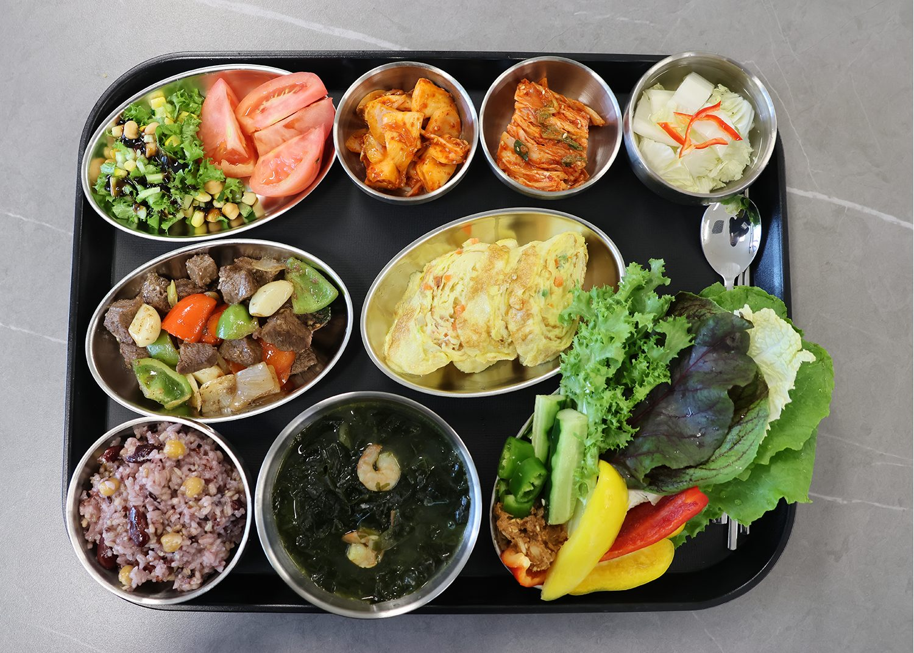
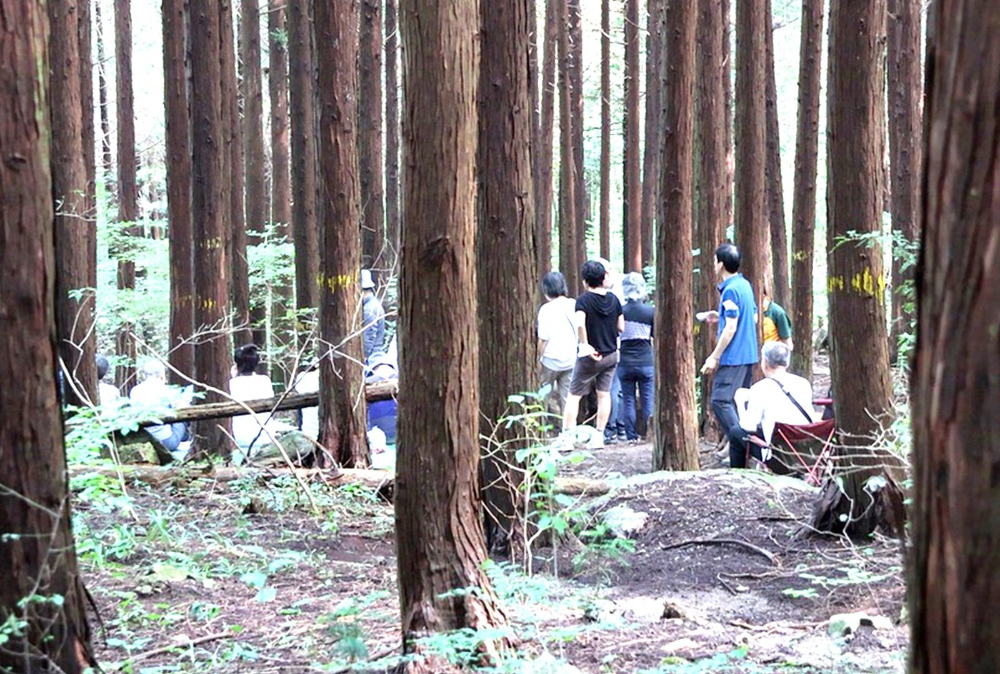
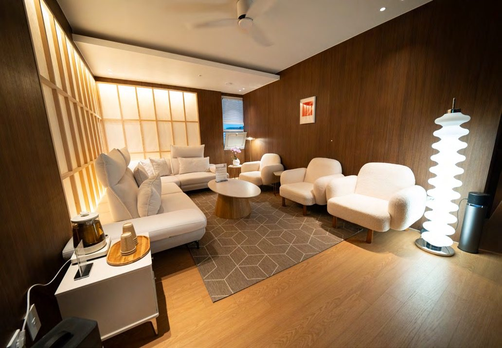

림프부종·통증·영양·피로·퇴원 후, 과제별로 무엇을 하나요?
하일렌요양병원은 치료 시기와 관계없이 림프부종 관리와 통증·영양·피로 관리를 이어가며, 퇴원 뒤에는 외래로 회복 흐름을 함께 관리합니다. 암종이 달라도 환자가 겪는 과제는 비슷합니다. 이 페이지는 과제마다 하일렌요양병원이 하는 일과 관련 글을 모았습니다.
림프부종
림프 관리｜치료 시기와 관계없이 림프부종 관리를 꾸준히 이어갑니다. 암재활 림프 순환센터의 치료는 림프부종 치료·도수치료·암재활 그룹 운동치료·통증치료이며, 무엇을 받을지는 주치의가 진료 때 몸 상태를 살펴 정합니다.

입원하지 않아도 외래로 림프 관리와 도수치료를 받을 수 있습니다.
운동 범위는 주치의가 환자 상태를 보고 환자와 상담을 통해 결정합니다.
관리를 이어가도 붓기가 줄지 않거나 다시 심해지는 경우가 있습니다. 그때는 현재 진료중인 대학병원의 판단을 먼저 따릅니다.
통증
수술 직후에는 통증·상처·합병증을 세심하게 관리합니다.

수술 부위 관리는 수술한 병원의 지침을 그대로 지켜 간호팀 및 주사·상처관리팀이 이어서 살핍니다.
면역 및 통증 치료센터에서 통증·자율신경 주사치료를 하고, 암재활 림프 순환센터에서 통증치료를 합니다.
통증은 몇 점인지만이 아니라 어느 부위가 어떤 느낌으로 언제 아픈지, 잠이나 식사에 지장을 주는지를 함께 말씀해 주시면 주치의가 처방을 정할 때 그대로 참고합니다. 수술 뒤나 항암 사이의 통증은 암재활 림프 순환센터에서 통증치료로 다룰 수 있습니다.
진행성 암은 통증과 증상 완화에 집중합니다.
야간 대응은 입원 안내에서 안내합니다.
항암 뒤 손발 저림이 얼마나 가는지는 기간을 숫자로 말씀드리지 않습니다.
통증이 줄지 않거나 갑자기 심해지는 경우가 있습니다. 그때는 참지 마시고 말씀해 주시고, 치료 방침은 치료병원의 판단을 따릅니다.
영양·식사
입원 식사는 환자 상태에 맞춰 주치의가 처방하며, 치료식 종류(일반식 · 항암식 · 위절제식 · 저잔사식 · 저염식 · 저요오드식 등) 가운데 고릅니다.


입원 첫날부터 식사 이야기를 나눕니다.
식당까지 오시기 어려운 날에는 병실에서도 같은 한 끼를 드실 수 있도록 준비합니다.
입원하지 않아도 외래로 영양공급수액과 고용량 비타민C를 받을 수 있습니다.
밥 형태는 미음, 죽, 진밥, 밥 네 단계로 나누고, 어느 단계로 드실지는 원내 주치의가 처방으로 정합니다. 영양컨시어지가 드신 양과 드신 뒤 불편한 점을 주기적으로 확인해 기록하고, 주치의가 그 기록을 보고 다음 단계로 올릴지 정합니다.
죽이나 미음도 넘기기 어려운 날이 이어지면 병동 간호사가 식사량과 상태를 주치의에게 알리고, 필요하다고 판단한 주치의가 영양공급수액을 처방합니다.
식사량이 늘지 않거나 체중이 계속 줄어드는 경우가 있습니다. 그때는 치료병원에 알려 주세요. 영양컨시어지가 드신 양과 드신 뒤 불편한 점을 주기적으로 확인해 기록하고, 주치의가 그 기록을 보고 식사를 처방합니다.
피로·체력
표준 치료 후에는 떨어진 체력과 신체 기능 회복을 돕습니다.

항암·방사선 치료 중에는 발열·오심·피로 등 부작용 증상을 관리합니다.
암재활 그룹 운동치료로 근력, 균형, 일상 동작을 연습합니다. 수술 부위에 따라 동작을 바꿉니다.
운동 범위는 주치의가 환자 상태를 보고 환자와 상담을 통해 결정합니다. 암재활 그룹 운동치료에 걷기 운동 프로그램은 따로 없습니다.
명상 프로그램은 프로그램 안내에서 안내합니다.
쉬어도 피로가 풀리지 않거나 잠을 못 이루는 날이 이어지는 경우가 있습니다. 그때는 참지 마시고 말씀해 주세요.
퇴원 후
하일렌요양병원의 회복 설계는 퇴원으로 끝나지 않습니다.

퇴원 전에는 왜 나가는지, 회복치료를 전부 멈출지 일부만 외래로 이어 갈지 쉬었다가 다시 볼지, 집에서 지킬 최소선을 진료에서 함께 정합니다.
퇴원하실 때 앞으로의 계획을 원내 상담실과 함께 정리합니다. 집으로 돌아가신 뒤에는 카카오톡 채널로 '퇴원 후 면역관리 가이드'를 보내드립니다. 일상에서 면역을 지키는 습관과 컨디션이 흔들릴 때 확인할 점을 담았습니다.
몸이 힘든 날에는 외래나 1박 2일부터 가능한 단기입원으로 언제든 다시 관리받으실 수 있습니다.
외래로는 고주파온열암치료, 고압산소치료, 도수치료, 림프 관리, 고용량 비타민C, 면역 주사제, 영양공급수액을 받을 수 있습니다.
다음 세 경우에 외래 통원을 권합니다.
- 림프부종이나 통증이 남아 있는 분
- 입원 중 받던 관리를 이어가고 싶은 분
- 다음 항암까지의 공백 기간을 관리하고 싶은 분
외래 통원 시간과 치료 종류는 단기입원·외래 회복치료 안내에서 확인할 수 있습니다.
한 달에 한 번이라도 괜찮습니다. 진료만 보러 오셔도 됩니다.
추적검사 주기는 치료병원이 정합니다. 추적검사는 치료받으신 병원에서 받습니다. 입원 중에 치료병원 외래나 검사 날이 오면 그날 다녀오시면 되고, 다녀오신 뒤에는 병동 간호사가 검사 결과와 받아 오신 약, 다음 일정을 기록합니다.
집으로 돌아간 뒤 컨디션이 다시 흔들리는 날이 있습니다. 그때는 치료병원에 알리고, 원내 상담실에도 말씀해 주세요.
입원부터 퇴원 후 일상까지, 회복의 흐름을 하일렌요양병원이 계속 함께 살핍니다.
자주 묻는 질문
림프부종 관리는 언제부터 받을 수 있나요?
림프부종 관리는 치료 시기와 관계없이 꾸준히 이어갑니다. 암재활 림프 순환센터에서 림프부종 치료, 도수치료, 암재활 그룹 운동치료, 통증치료를 하고, 입원하지 않아도 외래로 림프 관리와 도수치료를 받을 수 있습니다.
퇴원 뒤에도 회복치료를 이어갈 수 있나요?
퇴원 뒤에는 외래와 1박 2일부터 가능한 단기입원으로 회복 흐름을 함께 관리합니다. 퇴원 전에 왜 나가는지, 회복치료를 어디까지 이어갈지, 집에서 무엇을 지킬지를 원내 상담실과 함께 정합니다.
입원·외래·단기입원 상담은 원내 상담실에서 안내합니다. 궁금한 점 있으시면 언제든 물어보세요.
제공 하일렌요양병원 · 갱신 2026-10-21